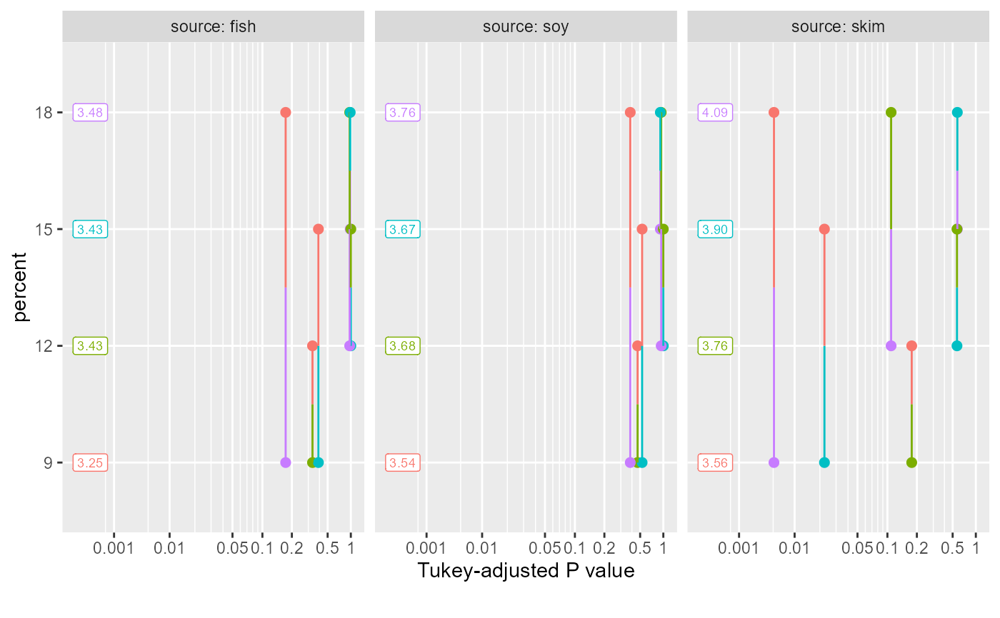

Constructs a plot of P values associated with pairwise comparisons of estimated marginal means.
Usage
pwpp(emm, method = "pairwise", by, sort = TRUE, values = TRUE,
rows = ".", xlab, ylab, xsub = "", plim = numeric(0), add.space = 0,
aes, ...)Arguments
- emm
An
emmGridobject- method
Character or list. Passed to
contrast, and defines the contrasts to be displayed. Any contrast method may be used, provided that each contrast includes one coefficient of1, one coefficient of-1, and the rest0. That is, callingcontrast(object, method)produces a set of comparisons, each with one estimate minus another estimate.- by
Character vector of variable(s) in the grid to condition on. These will create different panels, one for each level or level-combination. Grid factors not in
byare the primary factors: whose levels or level combinations are compared pairwise.- sort
Logical value. If
TRUE, levels of the factor combinations are ordered by their marginal means. IfFALSE, they appear in order based on the existing ordering of the factor levels involved. Note that the levels are ordered the same way in all panels, and in many cases this implies that the means in any particular panel will not be ordered even whensort = TRUE.- values
Logical value. If
TRUE, the values of the EMMs are included in the plot. When there are several side-by-side panels due tobyvariable(s), the labels showing values start stealing a lot of space from the plotting area; in those cases, it may be desirable to specifyFALSEor userowsso that some panels are vertically stacked.- rows
Character vector of which
byvariable(s) are used to define rows of the panel layout. Those variables inbynot included inrowsdefine columns in the array of panels. A"."indicates that only one row is used, so all panels are stacked side-by-side.- xlab
Character label to use in place of the default for the P-value axis.
- ylab
Character label to use in place of the default for the primary-factor axis.
- xsub
Character label used as caption at the lower right of the plot.
- plim
numeric vector of value(s) between 0 and 1. These are included among the observed p values so that the range of tick marks includes at least the range of
plim. Choosingplim = c(0,1)will ensure the widest possible range.- add.space
Numeric value to adjust amount of space used for value labels. Positioning of value labels is tricky, and depends on how many panels and the physical size of the plotting region. This parameter allows the user to adjust the position. Changing it by one unit should shift the position by about one character width (right if positive, left if negative). Note that this interacts with
aes$labelbelow.- aes
optional named list of lists. Entries considered are
point,segment, andlabel, and contents are passed to the respectiveggplot2::geom_xxx()functions. These affect rendering of points, line segments joining them, and value labels. Defaults arepoint = list(size = 2),segment = list(), andlabel = list(size = 2.5).- ...
Additional arguments passed to
contrastandsummary.emmGrid, as well as togeom_segmentandgeom_label
Details
Factor levels (or combinations thereof) are plotted on the vertical scale, and P values are plotted on the horizontal scale. Each P value is plotted twice -- at vertical positions corresponding to the levels being compared -- and connected by a line segment. Thus, it is easy to visualize which P values are small and large, and which levels are compared. In addition, factor levels are color-coded, and the points and half-line segments appear in the color of the other level. The P-value scale is nonlinear, so as to stretch-out smaller P values and compress larger ones. P values smaller than 0.0004 are altered and plotted in a way that makes them more distinguishable from one another.
If xlab, ylab, and xsub are not provided, reasonable labels
are created. xsub is used to note special features; e.g., equivalence
thresholds or one-sided tests.
Note
If emm is the result of a Bayesian analysis, the plot is based on
summaries with frequentist = TRUE.
The ggplot2 and scales packages must be installed in order
for pwpp to work.
Additional plot aesthetics are available by adding them to the returned object; see the examples
See also
A numerical display of essentially the same results is available
from pwpm
Examples
pigs.lm <- lm(log(conc) ~ source * factor(percent), data = pigs)
emm = emmeans(pigs.lm, ~ percent | source)
pwpp(emm)

pwpp(emm, method = "trt.vs.ctrl1", type = "response", side = ">")
#> Note: adjust = "dunnettx" was changed to "sidak"
#> because "dunnettx" is not appropriate for one-sided inferences
 # custom aesthetics:
my.aes <- list(point = list(shape = "square"),
segment = list(linetype = "dashed", color = "red"),
label = list(family = "serif", fontface = "italic"))
my.pal <- c("darkgreen", "blue", "magenta", "orange")
pwpp(emm, aes = my.aes) + ggplot2::scale_color_manual(values = my.pal)
# custom aesthetics:
my.aes <- list(point = list(shape = "square"),
segment = list(linetype = "dashed", color = "red"),
label = list(family = "serif", fontface = "italic"))
my.pal <- c("darkgreen", "blue", "magenta", "orange")
pwpp(emm, aes = my.aes) + ggplot2::scale_color_manual(values = my.pal)